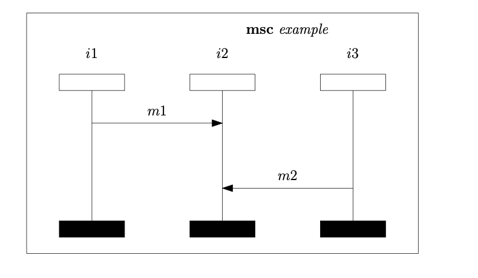
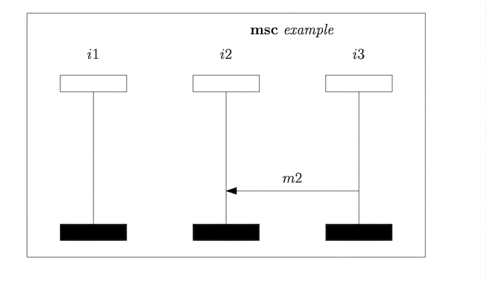
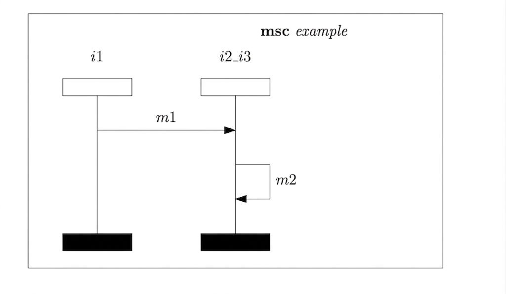
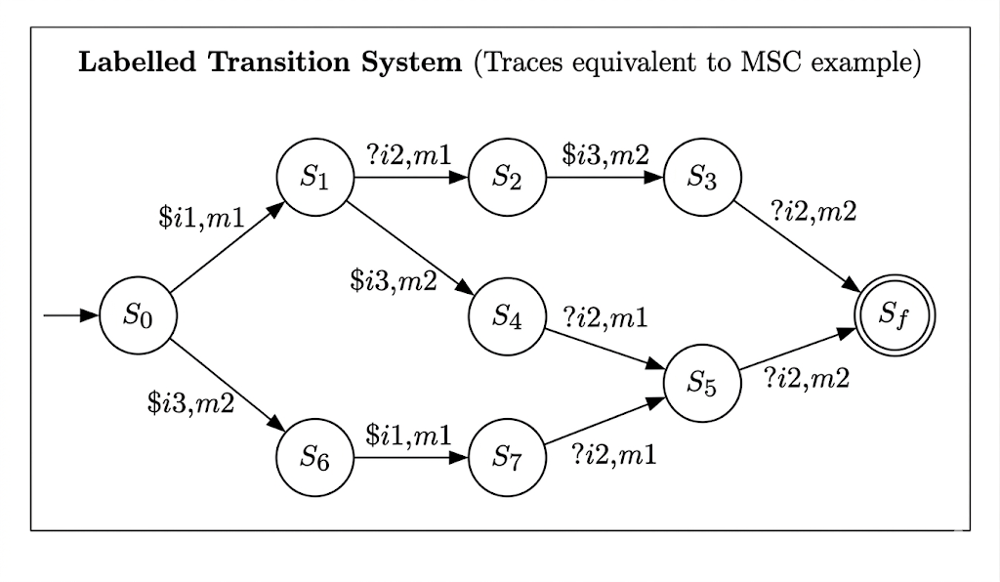

Annotations / Gemini 3 - Thinking / Example 2.docx
Gemini
Message Sequence Chart Event Identification
Conversation with Gemini
You said
Hi, consider this picture from a Message Sequence Chart.

xIdentify the events in this diagram.
Identifying Events
I've examined the MSC image, identifying three lifelines and two messages to start event analysis.
Defining Events
I've clarified event definitions, considering send/receive actions and formal notations for messages.
Gemini said
Based on the Message Sequence Chart (MSC) provided, the events correspond to the sending and receiving of messages between the instances.
Here is the breakdown of the events in the diagram:
Instances:
i1, i2, and i3
Messages:
m1: Sent from i1 to i2
m2: Sent from i3 to i2
Specific Events (ordered from top to bottom on each lifeline):
On instance i1:
Send event: Sending message m1
On instance i2:
Receive event: Receiving message m1
Receive event: Receiving message m2
On instance i3:
Send event: Sending message m2 In a standard MSC, the vertical order of events on a single instance line dictates their strict sequence, meaning on instance i2, the reception of m1 happens before the reception of m2.
Task type: Identifying events
Judgment:
Correct.
You said
What is the correct ordering between sending m1 and sending m2?
Gemini said
In this specific Message Sequence Chart, the relationship between sending m1 and sending m2 is unordered.
While time flows from top to bottom on a single lifeline, an MSC does not imply a global clock across different lifelines unless there is a clear causal link (a "happens-before" relationship) between the two events.
The Reasoning
To determine if one event must happen before another, you have to follow the "causal path" (the arrows and the vertical lines):
Sending m1 occurs on instance i1.
Sending m2 occurs on instance i3.
There is no message or sequence of messages that connects the sending of m1 to the sending of m2 across these separate lifelines.
Even though m1 is drawn higher up on the page than m2, in formal MSC semantics, these two events are considered concurrent. Without a coordination message between i1 and i3, we cannot say for certain which one was sent first in "real-time."
Summary of Partial Ordering
We can only define the following strict sequences based on the diagram:
Send m1 < Receive m1 (A message cannot be received before it is sent).
Send m2 < Receive m2.
Receive m1 < Receive m2 (Because they are on the same lifeline i2).
However, because Send m1 and Send m2 are on different lifelines and neither depends on the other, their relative order is undefined.
Task type: Identifying event orders
Judgment: Correct.
You said
What is the correct ordering between receiving m1 and receiving m2?
Clarifying Message Ordering
I've clarified the potential ambiguity in message receipt ordering based on the MSC diagram.
Gemini said
Based on the Message Sequence Chart, the receipt of m1 happens before the receipt of m2.
In standard MSC notation, time flows downwards along each vertical lifeline. If you look at the lifeline for instance i2, the arrowhead indicating the reception of m1 is positioned physically higher than the arrowhead for the reception of m2. Because it is higher up on the same lifeline, the event of receiving m1 must occur prior to the event of receiving m2.
Task type: Identifying event orders
Judgment: Correct.
You said
Based on the diagram above, generate a message sequence chart in which message m1 is abstracted away.
Gemini said

Task type: Abstraction
Judgment: Correct.
You said
Consider the original MSC given below. Merge instance i2 and i3; produce the message sequence chart after merging. Please draw the resulting MSC.
Gemini said
To find the traces of a Message Sequence Chart (MSC), we look for all possible total
Analyzing the Chart
I'm currently analyzing the source image to understand its structure, noting the instances and the message flow. It's a Message Sequence Chart named "example" with three vertical instances, and I'm focused on how to merge instances effectively. I will next generate the modified MSC.
Tracing the Messages
I've determined that merging i2 and i3 means they become a single entity, i2_i3. I've successfully traced how m1, which was sent from i1 to i2, now should be sent from i1 to the merged entity. I'm focusing next on determining where message m2 should now be sent to and from.
Constructing the New MSC
I've determined the components of the new MSC. The title remains "example". Instance i1 is unchanged. Instances i2 and i3 are merged into a single instance named i2_i3 with a start and end box. The message m1 goes from i1 to i2_i3. The message m2 now appears as a self-message within the i2_i3 instance, occurring after m1 is received.
Refining the Layout
I'm now focusing on refining the layout of the new MSC. I've re-positioned the instances and their boxes, centering i2_i3. I've also checked the flow of messages, m1 going from i1 to i2_i3 and then m2 being a self-message within i2_i3, ensuring sequential positioning. I'm double-checking spacing to make sure the chart is legible.
Revising the Diagram
I've determined the elements needed for the modified MSC, including instances, messages, and their positions, and have verified the temporal order of actions. I'm focusing on the final composition of the diagram, ensuring correct spacing and consistent positioning. I am also making sure the title and instance labels are accurate and consistently formatted.
Composing the new Chart
I've determined that "merging" means transforming internal messages into self-messages within a single instance. I'm finalizing the structure, including instance positions, messages, and overall balance. Now, I'm focusing on ensuring all text and lines are clean, and instance widths are appropriate.
Refining the Chart
I'm now determining all the precise parameters, including the new positions for instance boxes and message arrows, and the correct text labels. The merging logic is implemented and confirmed, with m2 now represented as a self-message within the combined instance i2_i3. The chart is intended to clearly show the temporal order, with m1 happening first.
Finalizing the Diagram
The focus is now on composing the new chart, specifically finalizing the layout parameters. I am working on the exact positioning of instance boxes, message arrows, and text labels. I'm confirming that the merging logic has been correctly implemented, with internal message m2 now represented as a self-message within the combined instance i2_i3. The goal is to accurately show temporal order.
Verifying The Transformation
I've confirmed the merger is accurate to the initial diagrams and instructions. The model correctly interprets the merge, using appropriate notation for the self-loop. The diagram remains faithful to the information provided initially. I will provide the image showing the completed merge.
Here is the Message Sequence Chart (MSC) that results from merging instances i2 and i3:
In the merged chart:
Instances i2 and i3 are combined into a single instance (labeled here as i2_i3).
The message m1 from i1 is now received by the merged instance i2_i3.
The message m2, which was previously sent from i3 to i2, becomes an internal action, represented as a self-message loop on the combined instance i2_i3.

Task type: Abstraction
Judgment: Incorrect
You said
Produce the list of traces of the original message sequence chart given below:
Gemini said
To find the traces of a Message Sequence Chart (MSC), we look for all possible total orderings of events that satisfy the chart's partial order (causal relationships).
1. Identify the Events
First, let's define the four discrete events occurring in the diagram:
!i1,m1: Instance i1 sends message m1
?i2,m1: Instance i2 receives message m1
!i3,m2: Instance i3 sends message m2
?i2,m2: Instance i2 receives message m2
2. Define the Constraints
A valid trace must respect these three rules based on the diagram:
Causality (Message): A message must be sent before it can be received.
!i1,m1<?i2,m1
!i3,m2<?i2,m2
Lifeline Order: Events on the same vertical line happen in top-to-bottom order.
On lifeline i2: ?i2,m1<?i2,m2
Concurrency: Events on different lifelines (i1 and i3) are concurrent unless linked by a message path. There is no link between !i1,m1 and !i3,m2.
3. Valid Traces
By combining these constraints, we find that the sequence !i1,m1→?i2,m1→?i2,m2 is fixed, but the event !i3,m2 can "float" anywhere as long as it happens before its reception (?i2,m2).
There are three valid traces for this MSC:
| Trace # | Event Sequence |
| 1 | ⟨!i1,m1,?i2,m1,!i3,m2,?i2,m2⟩ |
| 2 | ⟨!i1,m1,!i3,m2,?i2,m1,?i2,m2⟩ |
| 3 | ⟨!i3,m2,!i1,m1,?i2,m1,?i2,m2⟩ |
Note: In Trace 3, the message m2 is technically sent before m1 even though it appears lower on the page. Since i1 and i3 are independent, the visual "height" across different lifelines does not imply a global time.
Task type: Traces
Judgment: Correct.
You said
Draw a labelled transition system that has the same traces as the MSC. Please produce one static picture, no interactive visualisation.
Defining the Goal
I'm focusing on the core requirement: creating an image of a Labelled Transition System that embodies the specific traces I've pinpointed. I'm prioritizing this single image as a static visual representation of the LTS.
Constructing the Diagram
I'm now determining the structure of the Labelled Transition System, starting with branching for the first event in each trace. I've begun constructing the paths based on each trace. I am currently focusing on the first branch of the design, working from the initial event !i1,m1.
Designing the Transitions
I'm now expanding the LTS structure, incorporating the remaining traces. I'm focusing on handling both branches from state S1, one leading to Trace 1 and the other to Trace 2. The goal is to reach a final state from both branches. I am working on determining the structure for Trace 3.
Refining the Design
I'm now completing the LTS structure, concentrating on the third trace which begins with !i3,m2. I am creating the associated branch from the starting state S0 and working to ensure the transitions match the trace's sequence of events.
Constructing the Transitions
I'm now generating the LTS structure based on the three identified traces, beginning from the user request and breaking each trace into transitions and states. I'm focusing on the branching from the initial state, to ensure each trace has a dedicated path. I've chosen to have two branches from the initial state S0. I will ensure that the third trace correctly matches its expected transitions. Now, I am evaluating the potential for simplifying the state space and have merged states where appropriate.
Refining the Structure
I have a preliminary LTS structure, and I've focused on minimizing states while ensuring all three traces are correctly represented. I merged two intermediate states to simplify the diagram, resulting in a cleaner LTS. I'm now setting up the diagram layout, placing states to visualize the transitions effectively. I'm checking the event labels in the diagram to confirm that they align with the original traces.
Visualizing the Traces
I've finalized the structure of the Labelled Transition System, ensuring all three traces are correctly represented. A state merging strategy was employed to minimize the LTS complexity. I'm now organizing the diagram layout for clear visual presentation, considering spacing and node placement. I am double-checking labels to ensure all event sequences align with the requested traces.
Finalizing the Diagram
I'm now implementing the layout plan, drawing transitions and labeling states and events according to my refined structure. I'm focusing on clarity to ensure that all traces are correctly represented. I am re-checking labels against the original traces.
Refining the Visualization
I'm now generating the final diagram based on the layout plan. I'm focusing on positioning the states and transitions to minimize overlaps, ensuring visual clarity. I've re-checked that the labels align perfectly with the original traces.
Visualizing the LTS
I'm now generating the initial visualization, placing states and transitions based on the finalized structure and layout plan. The focus is ensuring the relationships between states accurately represent the traces.
Constructing the Image
I'm now generating the initial visual representation of the Labelled Transition System based on the finalized design. The plan is to render states and transitions based on the layout, ensuring that the relationships accurately represent the requested traces. I am now working on ensuring the event labels are accurate.
Visualizing the LTS
I'm now implementing the layout plan for the Labelled Transition System, aiming for clarity and precision in the visual presentation. The plan incorporates state placements and transition directions to ensure the correct traces. I'm focusing on rendering each element of the LTS, double checking that everything is correct.
Visualizing the LTS
I'm now integrating all the layout and transition data into the image generation process, ensuring each element is precisely rendered. I am confirming that the resulting visualization precisely reflects the Labelled Transition System I have designed.
Visualizing the LTS
I'm now formulating the initial instructions to render the Labelled Transition System, based on the finalized design. The plan prioritizes clear representation of states, transitions, and labels, ensuring they correspond exactly to the traced event sequences. The layout plan is fully implemented and ready to be used.
Reviewing LTS Analysis
I'm now analyzing the generated Labelled Transition System (LTS). I'm currently focused on the states and transitions within the LTS, to ensure they align with the Message Sequence Chart (MSC) traces. I'm checking that S0 is marked correctly.
Confirming LTS Completeness
I've confirmed the completeness of the Labelled Transition System (LTS) by verifying that all paths from the initial state (S0) to the final state (Sf) are covered. I've also checked the state transitions against three Message Sequence Chart (MSC) traces, confirming that each path corresponds correctly. No other valid paths or labels appear to be present.
Validating LTS Paths
I'm now verifying the Labelled Transition System (LTS) against the Message Sequence Chart (MSC) traces. I've examined the states, confirming S0 and Sf are correctly identified. Currently, I'm checking each path within the LTS. So far, the transitions align with the three traces as expected. No other possible paths appear to exist.
Gemini said

Task type: LTS
Judgment:
(Partially) Incorrect. Events are incorrectly labelled with $. Modulo that syntactic mistake, the traces are correct. It failed to identify the diamonds correctly though.